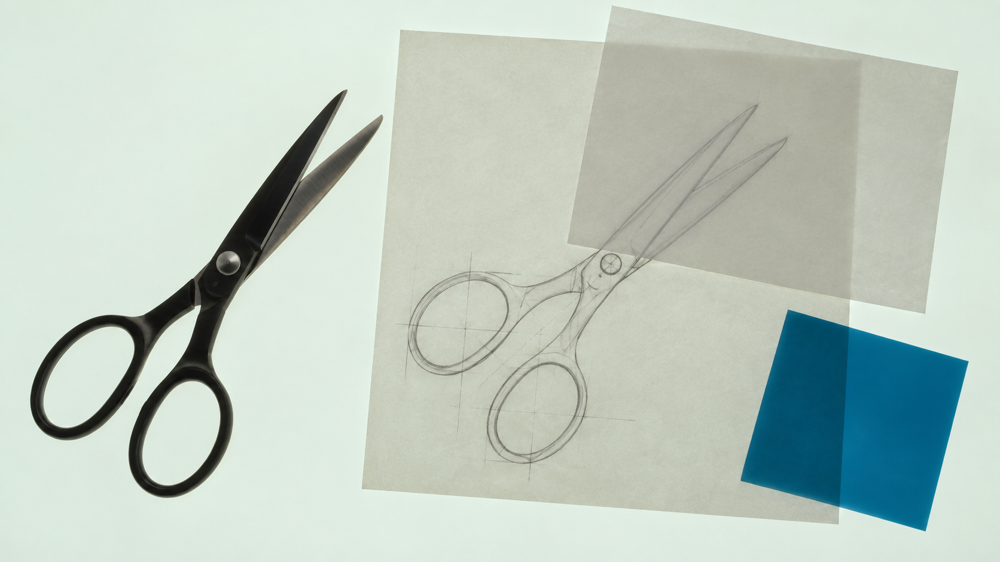
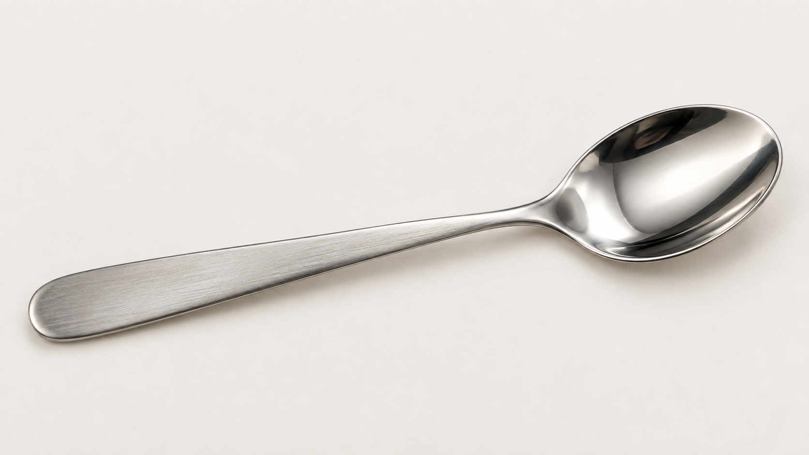
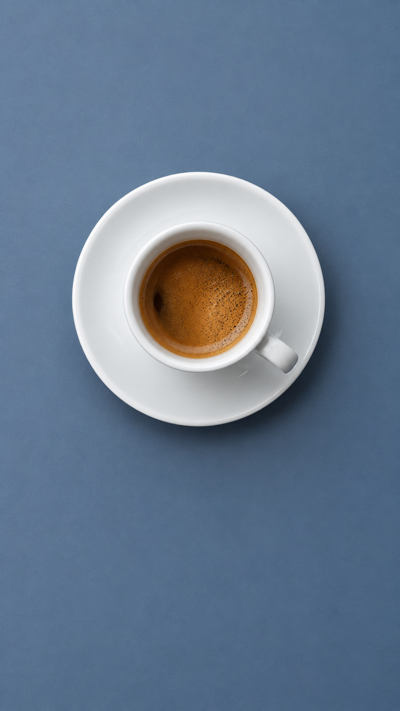

为 Codex 创作参考驱动的光台、材料静物与实体编辑图片。
开始创作看见材料如何回应光

横竖分别构图，原生图片与记录随图保存。
同一主题
两种画幅

让光落在能说明材料的位置。
在细节里
看见做法




带来主体、参考和你想看清的关系。
把你的主体
带到这里
先选一种观看方式
在观看台选主题和画幅，下方请求会跟随选择。
再附上你的主体
产品照片确定身份，风格参考说明光、材料或构图。
用实际图像继续判断
看完整构图，再看原生细节，按具体部位细化。
在 Codex 中使用
在解压后的完整包目录执行安装，再到 Codex 新对话中调用。
python3 scripts/install_skill.py --backup-existing也可阅读 ChatGPT 使用指南，附上参考图片后开始。
可直接编辑，再复制到 Codex。
开始前
需要准备什么？
主体照片或文字想法、目标画幅，以及想保留或改变的部位。参考图按身份、光线、构图或材料的用途参与创作。
只能做纸张吗？
材料与媒介按主体选择。玻璃、金属、织物、木材和薄片各用相容的光与构造；研究图也可以落在布、透明片、刻痕或数字图面上。
横竖图怎样得到？
两种画幅分别组织主体与空间。这里的横竖案例有独立原生文件，可直接切换并查看各自记录。
案例来自哪里？
本页案例由 AI 图像工具生成，原生图片、实际调用和观察记录随完整包保存。具体信息见 配图来源。
怎样继续细化？
指出具体部位和希望看到的变化，例如反射带、厚边、织物弯曲或纸层密度，并说明本次保留的构图和身份关系。